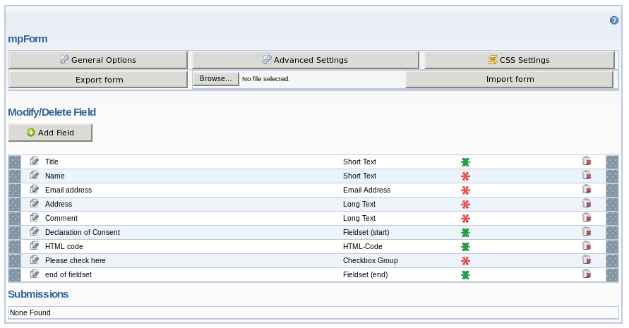

German
German  English
English
Multi page forms << ^ MPForm Help pages ^ >> Help users
MPForm Documentation: Install a standard form
Level of difficulty: B
It is also possible to prepare a form on your local machine, export it and import it on the web server again. For a simple contact form you can also import the standard form:
- Just download the standard form English.
- On the target site, create a new section of type MPForm.
- In the backend view of this new section select the file which you have just downloaded (use the file selection dialog in the middle at the top of the section) and click on import form.
- In the settings of the form you just need to complete your email address.
In the backend the form looks like this:
